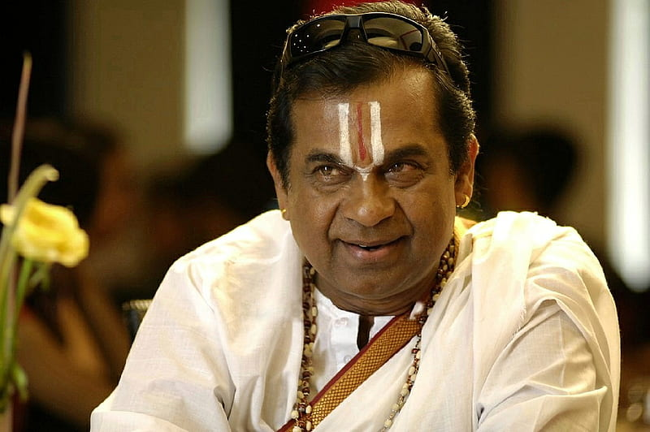

BRAHMANANDAM

Kanneganti Brahmanandam (born 1 February 1956), known mononymously as Brahmanandam, is an Indian actor, comedian, impersonator, and voice actor known for his works predominantly in Telugu cinema.[1] He is particularly known for his comic performances.[2][3] He holds the Guinness World Record for the most screen credits for a living actor, appearing in over 1000 films to date.[4][5][6] He was awarded an honorary doctorate by Acharya Nagarjuna University.[7] Regarded as one of the finest and highest-paid comic actors of India,[8][9] he was honoured with the Padma Shri, the fourth-highest civilian award in India, for his contribution to Film Art.[10]
After completing his Master of Arts degree, Brahmanandam worked as a Telugu lecturer in Attili of West Godavari district, Andhra Pradesh. Simultaneously, he also worked in theatre and as a mimicry artist. He made his television debut in 1985 with DD Telugu's Pakapakalu which received appreciation from the audience.[11][12][13] After watching his performance in the show, director Jandhyala cast him in the film Aha Naa Pellanta! (1987), which became his breakthrough role.[14][15] In a career spanning over 35 years, he has received six state Nandi Awards, one Filmfare Award South, and six CineMAA Awards.[16][17]